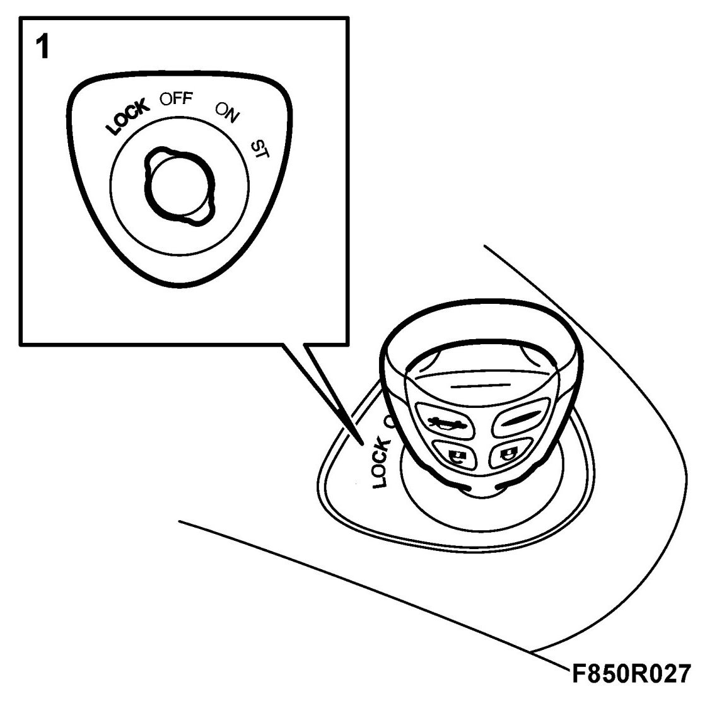
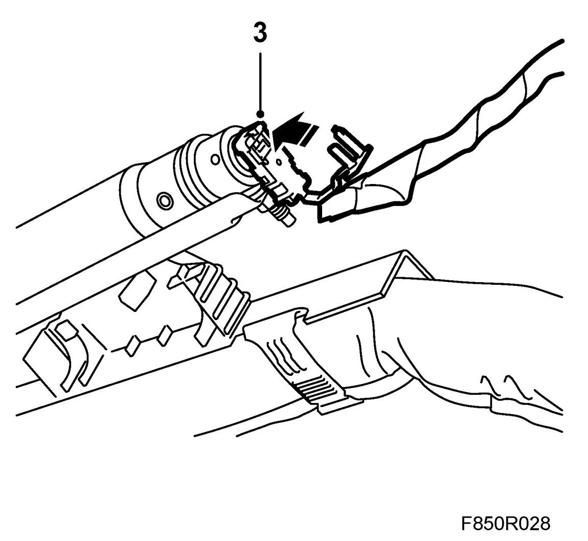
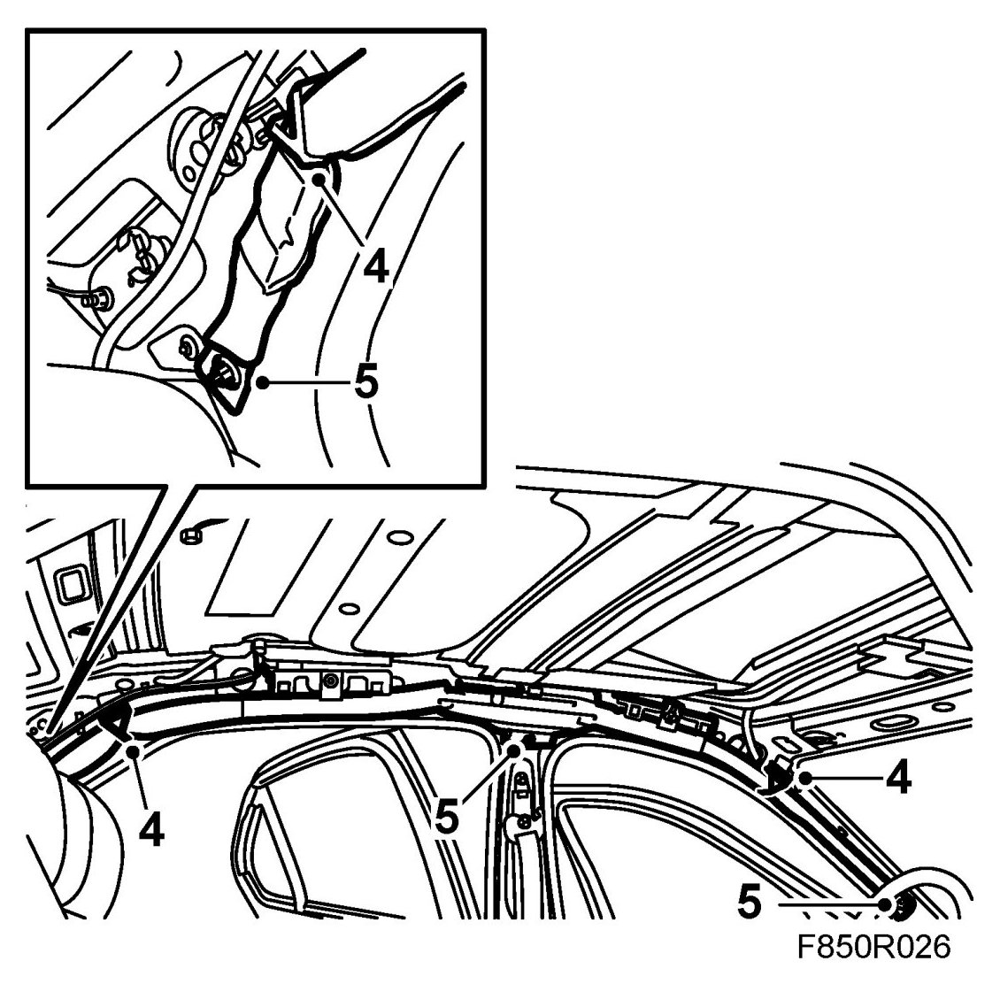
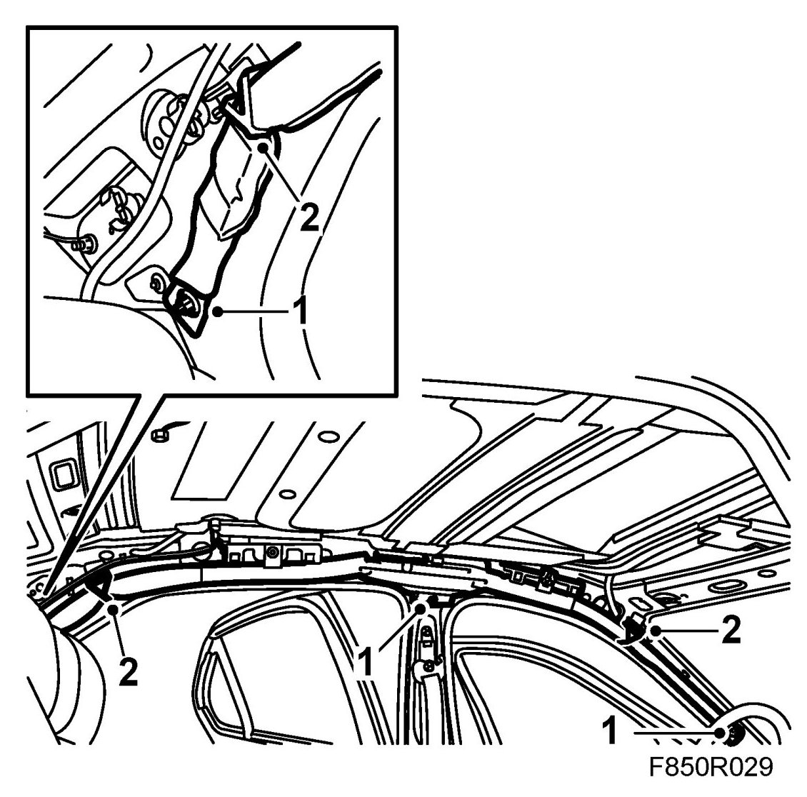

Inflatable Curtain (732)
Inflatable Curtain (732)
WARNING: Read through Safety and handling instructions and Before removing a control module before starting work.
To remove
WARNING: The battery's ground cable must be removed before the positive cable. Wait for at least 1 minute after disconnecting the battery before beginning any work on the airbag system. Otherwise the airbag may be deployed unintentionally and this can cause fatal/severe personal injuries.
1. Turn the ignition key to the position LOCK.

2. Remove the headlining.
3. Dismantle the connector for the inflatable curtain gas generator by opening the rear piece of the connector and then pulling the connector straight out.

4. Dismantle the inflatable curtain's three tray clips.

5. Dismantle the screws holding the inflatable curtain.
To fit
1. Position the inflatable curtain and fit the inflatable curtain screws. Exercise care so that the protective material comes on the outside of the inflatable curtain mounting so that is protects against the joint in the headlining.

Tightening torque 9.5 Nm (7 lbf ft)
2. Press in the inflatable curtain's three tray clips. The tray clip must always be replaced when the inflatable curtain has been dismantled.
3. Connect the connector to the inflatable curtain's gas generator. Make sure you press in the rear piece on the connector.
4. Fit the headlining.
5. Connect the battery.
6. Turn ON the ignition switch and check the airbag system and control module using the diagnostic tool as follows:
Connect the diagnostic tool to the data link connector under the dashboard. Delete any diagnostic trouble codes.
Turn the ignition OFF and then ON again. Wait at least 1 minute with the ignition on.
Check whether a diagnostic trouble code is shown:
If a diagnostic trouble code is shown:
Carry out fault diagnosis according to the instructions under respective trouble codes.
If a diagnostic trouble code is not shown:
The assembly was successful. Disconnect the diagnostic tool.
7. Carry out Measures after disconnecting the battery.